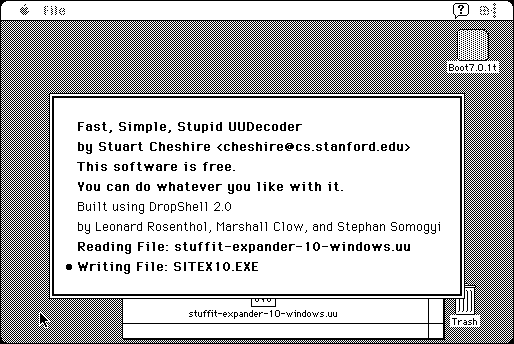

Download
StUU.dsk.zip (193K) StUU 1.2 repackaged into a zipped hfs disk image and checksum file. The disk image can be mounted with Mini vMac.
StUU.zip (262K) StUU 1.2 in the original format.
copyright: Stuart Cheshire
mod date: Nov 18, 1999
license: Freeware
from url :
StUU
A “drag-and-drop UUdecoder”. It is “not limited by the amount of RAM”. It “requires System 7.” Source code is included.

If you find these downloads useful, please consider helping the Gryphel Project, which hosts them.
Here are the md5 checksums for the downloads, signed with Gryphel Key 5:
--------- GRY SIGNED TEXT --------- 85bee13fac43fbb35261dbd95a8c592e StUU.dsk.zip 7328fc1cfca1e47fc67780cb54e5c2ae StUU.zip ------- BEGIN GRY SIGNATURE ------- Gry/4Xa8CFcUzxdN/IUEULWKsQb5oqBGMsOvUgZeOONtzLsNy0pVaO/uk5/FkHu1 SberLZiIdgto2NwBvRokBPvvv7jiBBZU1oMmhqy1Xj5zyaRVBHZ4wJd3tDWvFEnO BaMVikT130+60YX5NN9t+eYAXBgzI6qrQGJ1EU2rBOt+wQZ4XPdMwP5izE6UqPIJ -------- END GRY SIGNATURE --------